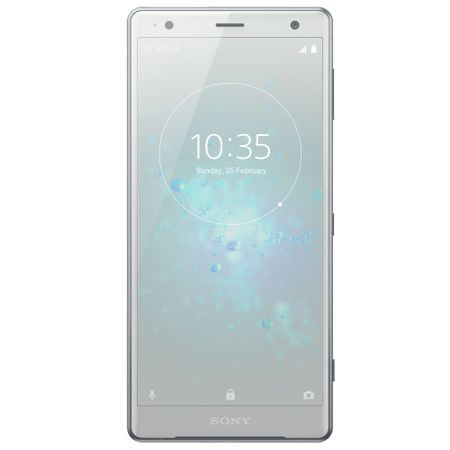

Pret:3600lei

Descriere:
Sony Xperia XZ2 Xperia XZ2 este echipat cu cele mai recente tehnologii Sony pentru a oferi o experienta de
divertisment care sa va incante simturile intr-un mod total inedit. Si asta, indiferent daca v-ati lasat
captivat de un film in format HDR sau imortalizati detalii ascunse cu noul aparat foto Motion Eye avansat.
Lasati-va captivat de divertisment Datorita tehnologiei Sony Sistem de vibratii dinamice, afisajului HDR
Full HD+ si tehnologiilor Sony specifice televizoarelor, toate filmele si clipurile dumneavoastra video vor
deveni o experienta noua, care va va stimula in mod inedit. In plus, datorita difuzoarelor stereo puternice,
veti avea parte si de un sunet captivant. Universul dumneavoastra de divertisment in format HDR Datorita
afisajului High Dynamic Range (HDR) mare, va puteti delecta cu filme si alte tipuri de continut cu contrast,
culori si claritate exceptionale. In plus, tehnologia Sistem de vibratii dinamice va permite sa simtiti actiunea
in palma. Descoperiti cea mai buna experienta de vizionare Lasati-va captivat de emisiunile preferate, indiferent
daca sunteti pe tren sau acasa. Xperia XZ2 foloseste tehnologia Sony specifica televizoarelor pentru a converti
ascendent orice continut in format High Dynamic Range (HDR). Prin urmare, chiar si atunci cand redati in
flux clipuri video, veti avea parte de contrast, claritate si culori de calitate cinematografica. Captivati-va
simturile cu vibratiile dinamice Indiferent daca vizionati filme sau ascultati muzica, tehnologia Sony Sistem
de vibratii dinamice analizeaza datele audio si va permite sa simtiti actiunea cu mana, oferindu-va astfel
o experienta de divertisment cu adevarat inedita. Iar daca nu aveti dispozitia necesara pentru aceasta experienta,
puteti pur si simplu sa o dezactivati. Efect de cinema datorita boxelor stereo puternice Datorita difuzoarelor
frontale puternice ale smartphone-ului Xperia XZ2, puteti sa vizionati clipurile video preferate cot la cot
cu prietenii. Fiind dotate cu tehnologia S-Force Front Surround, acestea sunt cele mai puternice difuzoare
Xperia de pana acum. Emisiunile preferate in format HDR Delectati-va cu ultima mare senzatie in materie de
divertisment, oferita prin intermediul serviciilor Amazon Prime Video si Netflix1.